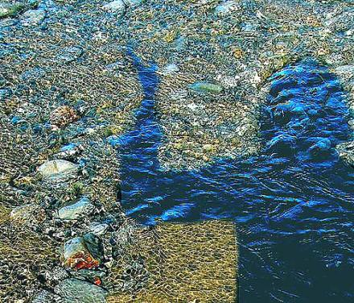

Aditi Machado
As soon as a man dies
The Krishnans are back in the village:
the old man is dead and already
they’ve beaten his hut out of its dust,
laid a tablecloth and now cutlery
croaks the song of the city.
He ghosts around, mutters
about the knives that grate
against the plates, the sounds
he wants to sink down the stone well,
and the smell of starch that cuts
through his home. You cannot tell
he lived here before.
Drowning a Shadow

The man on the bridge peers into the water,
watches his shadow that must drown for a reason
he does not yet know.
He cannot blame the sun
for some shadows are not absent light,
but growths of black from the heel -- kites
of human balm billowing in the ground.
In the water he pictures a tomb
for his shadow, perhaps a grotto for fish
to worship his one fragment.
In a dream he has achieved the dissection:
atoms of his shadow fumble in the water, strain
to fill the vast grave, search for an interstice
to skid into and rest.
He wakes up, thinks:
if the shadow were buried in soil, it could constrict
into the air slices between worm and earth;
it could, say, turn to stone.
One day, skipped into the sea,
it could settle warmly amid the anemone.
Now he stands in a dugout field and sows
his foot in, black kite attached, sun
directly above. Farmers stare and wonder what
made him think he could grow roots here.
Aditi Machado is a writer from Bangalore, India. Her poetry has been published or is forthcoming in magazines such as Umbrella, iota, the roundtable review and Fuselit.
|